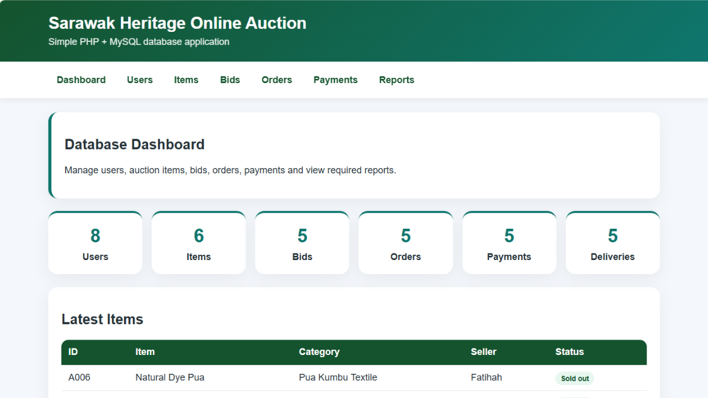

Sarawak Heritage Online Auction
A Web-Based Online Auction Management System
Sarawak Heritage Online Auction (SHAA) is a web-based auction management system designed to support the online auction of traditional Sarawak products and cultural items. The system provides a platform for managing users, auction items, bids and transactions.

Project Overview
This project focuses on developing an online auction platform that allows users to participate in bidding activities for Sarawak heritage products. It also includes management features to help organise auction items, user information, bids and transaction records.
Project Objectives
- Develop a web-based platform for online auction activities.
- Organise auction items and user information in a database.
- Support the management of bids and auction transactions.
- Provide an organised interface for managing auction records.
Key Features
- Dashboard for viewing system information and statistics.
- User management for registered accounts.
- Auction item management.
- Bid management and bidding records.
- Order and payment management.
- Reports for viewing auction-related records.
My Contributions
I contributed to the project during both the initial planning and development stages. My involvement included:
- Designing the initial Entity Relationship Diagram (ERD) to establish the database structure.
- Collaborating with team members to prepare and populate sample data for the system.
- Working together with the team to implement and improve various system functionalities.
Through this project, I gained practical experience in database design, system development and collaborative problem-solving.